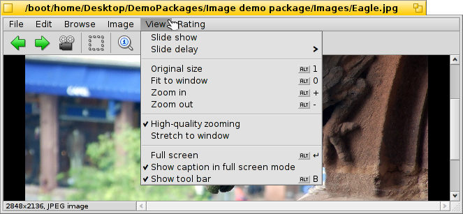

ShowImage
| Deskbar: | Nicio intrare, lansat uzual via dublu clic pe un fișier admis. | |
| Locație: | /boot/system/apps/ShowImage | |
| Configurări: | ~/config/settings/ShowImage_settings |
ShowImage allows you to view images in all formats that are supported through DataTranslators. New formats are automatically recognized when their translator is added to the system. This has been done for Haiku's vector icon files, WonderBrush images or when WebP images became available, for example.
ShowImage provides minimal editing features to crop, rotate and flip images and to save them in another format.
 Vizualizare
Vizualizare

The menu offers to start a of all images in a folder (or query result window) and set a from 2 to 20 seconds.
Other commands apply to the currently displayed image (without changing the size of the window):
shows the image with a 100% zoom factor.
shrinks the image back into the window frame, e.g. after having zoomed into it or after resizing the window.
and move into and out of the image in 10% steps. Zooming is also done with the mouse wheel; to pan an image bigger than the window, simply left-click and drag your mouse around.
Two settings don't just apply to the currently displayed image and are remembered when browsing from one image to the next:
applies a very fast filter when zooming to reduce jagged lines and produce a smoother result.
will stretch smaller images to fill the current window frame.
Then there's a mode with an option to which overlays the file name at the bottom of the image.
Lastly, will show/hide the graphical controls:
From left to right: Previous image, next image, start slide show (in full screen mode), selection mode, original size, fit to window, zoom in, zoom out, previous and next page (when an image format like TIFF allows multiple pages in one file, see below).
Most of the more often used commands are also available from a right-click context menu on the image. Convenient when in full-screen mode.
Navigare

After opening an image you can quickly browse through all the other images in its folder (or query result window) by pressing ↑/↓ or ←/→. You can see the selection change accordingly in the Tracker window.
There is a quick way to open the folder of the current image and even navigate to its parent and subfolders. It works just like with drill-down navigating in Tracker by clicking in the info area in the status bar that shows size and format of the current image.
Looking at the menu, shows another type of browsing: Some image formats, like TIFF, can contain several pages in one file. Commands like and let you navigate those pages.
Editare

The menu offers the few image manipulations necessary for an image viewer: rotating and flipping the image. Note however, that the actual image data won't be changed. Only an attribute is added to the file so it'll be shown rotated or flipped the next time you open it.
will open the Backgrounds preferences to set the current picture as image for your workspaces.
Cropping is another feature that's needed sometimes. To define the frame to cut to, you can switch to from the menu and drag out a box with your left mouse button. If you don't want to change modes first, you can create this box in "normal mode" by simply holding CTRL while left-click-dragging, which otherwise would just pan the image around.
or ESC will remove the selection box.
Următorul capitol vă arată cum să salvați zona decupată.
Salvare și convertire
To save or convert an image into any available format, you can invoke the normal item from the menu, select the format and choose a file name.
Often quicker, especially when the Tracker window with the destination folder is already open, is using drag & drop.

This is also how the above mentioned cropping is finalized. Either select a frame as described above, or choose for the whole image. Then drag & drop the selection onto the Desktop or any Tracker window to create a new image clipping in the same format of the original image.
To save in another file format, do the dragging with the right mouse button and choose a format from the context menu when dropping the image.
Scurtături tastatură
Aceasta este o listă cu cele mai folositoare scurtături:
| ← / ↑ | Imagine anterioară | |
| → / ↓ | Imagine următoare | |
| DEL | Mută la gunoi | |
| + | Mărire | |
| - | Micșorare | |
| 0 | Dimensiune originală (zoom 100%) | |
| 1 | Potrivire la fereastră | |
| ALT ENTER | Comută la modul ecran complet (și prin dublu clic) | |
| CTRL | În timp ce țineți apăsat CTRL puteți crea un cadru de selectare fără să comutați explicit la modul de selectare. |